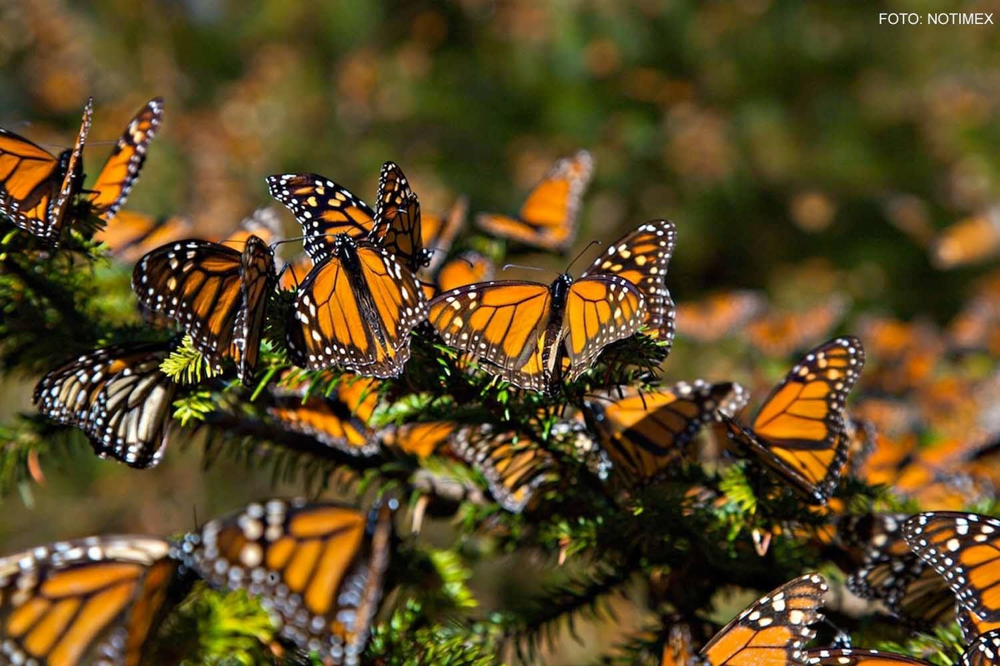

La Lista Roja de la Unión Internacional para la Conservación de la Naturaleza aún no evalúa la situación de
la mariposa monarca. Sin embargo, su migración está considerada como “Fenómeno amenazado” por la Unión
Internacional de la Naturaleza y Recursos Naturales y la misma UICN la reconoce como “Fenómeno en peligro de extinción”.
Sin duda, un viaje tan largo entraña muchos peligros para la pequeña mariposa, que tiene que sortear amenazas como
el cambio climático, la tala de los árboles de oyamel, los parásitos y el uso de pesticidas.
Algunas organizaciones ya tomaron cartas en el asunto, especialmente en los sitios de hibernación.
Por ejemplo, en 1986 se creó en México la Reserva de la Biosfera Mariposa Monarca, que incluye más de la mitad de
las colonias de hibernación.
1.CULTIVOS RESISTENTES A HERBICIDAS.
2.USO DE INSECTICIDAS.
3.LABORES DE MANTENIMIENTO EN CARRETERAS.
4.CONTAMINACIÓN POR OZONO.
5.DEFORESTACIÓN.
